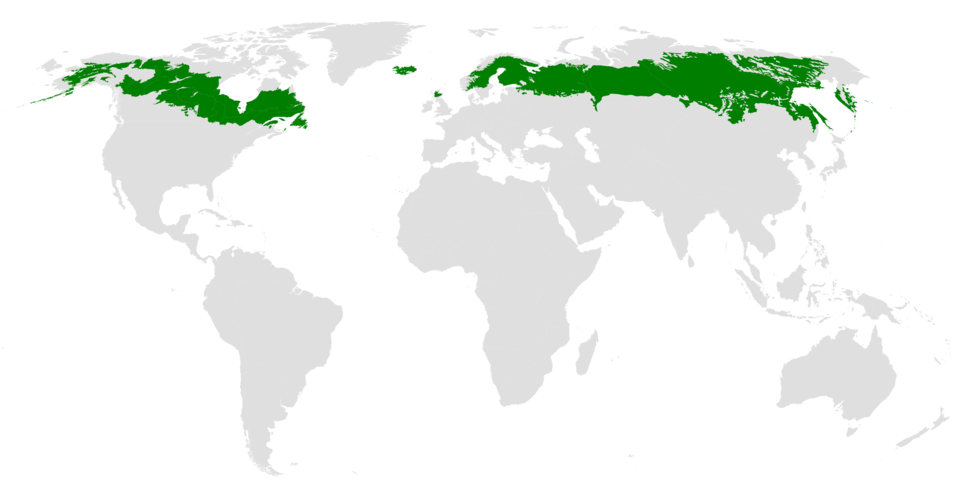

Sustainable Forest Environment (SFE)
Lecture 2: Forest Ecosystems (Last update: 19 April 2025)
Ecosystem
Ecosystems can be small (like a pond) or large (like a forest).

Ecosystem
Ecosystems are dynamic and can change over time due to natural processes, disturbances, or human activities. Ecosystems are interconnected, meaning that changes in one ecosystem can affect other ecosystems.

Ecology
Definition
Ecology is the scientific study of “ecosystems” and their interacting biotic and abiotic components, that is, the interactions between living organisms and their environment, including the relationships among organisms and their physical surroundings.
In ecology, the terms organism, species, population, and community represent hierarchical levels of biological organization, each reflecting a different scale of interaction within the natural world.

Species
Definition
A species is a group of organisms that are genetically similar and are capable of interbreeding under natural conditions to produce fertile offspring.
Examples of species include:
- Red maple (Acer rubrum): A common tree species found in North America, known for its vibrant red leaves in the fall.
- White oak (Quercus alba) 白樫の木 (Shirakashi no ki): A large deciduous tree species native to eastern and central North America, valued for its strong wood and acorns.
- Red oak (Quercus rubra) 赤い樫の木 (Akai kashi no ki or Akagashi): A fast-growing tree species native to North America, known for its distinctive red leaves in the fall and valuable timber.
- There are more than 500 species of oak trees across the world source.

Components of Forest-Ecosystem
- The main components of a forest ecosystem include biotic and abiotic components.
Biotic components: living organisms such as trees, shrubs, animals, fungi, and microorganisms.


Boreal forests
- Boreal forests, also known as taiga, are found in the northern regions (high latitudes) of North America, Europe, and Asia.
- Climate: Long, cold winters and short, mild summers; relatively low precipitation.
- Dominated by coniferous trees such as spruce, pine, and fir.
- Lower species diversity; adapted to cold environments.
